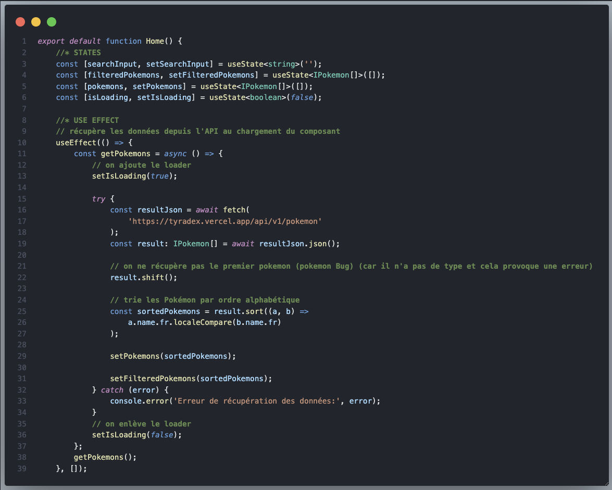
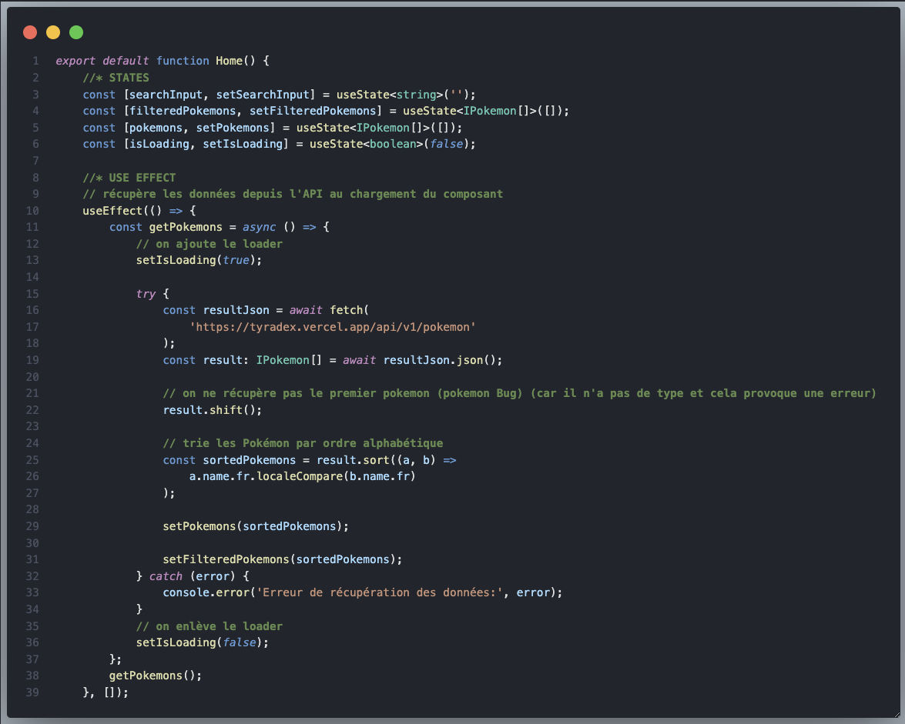

Découvrez "Next Pokedex", le Pokedex ultime, développé avec Next.js Next.js, TypeScript et Tailwind CSS ! Ce projet est parfait pour tous ceux qui veulent connaître les secrets les plus profonds des Pokémon, sans avoir à sillonner des forêts ou à plonger dans des grottes mystérieuses !
Grâce à l'API Tyradex, chaque Pokémon est affiché avec ses informations complètes et détaillées. Et oui, on ne fait pas les choses à moitié ici ! Ce Pokedex moderne vous permet de naviguer facilement, de faire des recherches par nom, et bien sûr, de tout voir d'un seul coup d'œil, car l'interface est aussi stylée que fonctionnelle !
 Accéder au Pokedex
Accéder au Pokedex Accéder au repo
Accéder au repo


 
